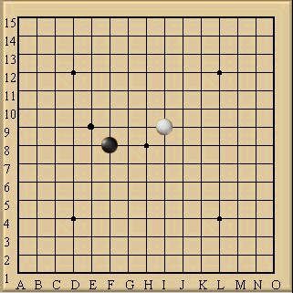

诗解五子棋之三境界
#1 诗解五子棋之三境界作者：逆刃 发表时间：2008-4-10 22:04:30
本文转自仴煷塆的空间
本文链接：http://user.qzone.qq.com/897773879/blog/1207830532
诗解五子棋之境界

王维之>:做学问有三境界之分.
五子棋也未尝不可. 
五子棋之第一境界:
疏影横斜水清浅 暗香浮动月黄昏
在此境界为五子棋的入门阶段,基本没有掌握什么很好的技巧,
但目的已然明确,就是连五子,掌握最基本的开局技巧.
特征是:拼命地连三子,重功而轻守.碰到水平相当的或许有种爽感,
但是碰到第二,第三境界的人,难免回跌个大跟头,
好容易连了个双活三,却茫然地发现别人已经四三胜了,
碰到水平跟高的甚至连三子都不怎么连得起来就KO了.
这个阶段就像清浅的水一样,没什么内涵,
像黄昏的月一样没什么光彩,所以还待磨练.
五子棋之第二境界:
黄河西来决昆仑,咆哮万里触龙门
在此境界为五子棋之中级阶段,基本掌握所有的连五子技巧,
掌握大部分开局,执黑则善于利用先手开局的优势,
执白则会根据对方的开局做适当的调整,主张攻守兼备.
这时候第二境界又可以分为两派,一派更加着重进攻,
一般气势咄咄逼人,像万里咆哮的黄河;
另一派则不动如山,强调防守,以静制动,在防守中悄悄将优势转化到己方,
像深不见底的黄河.此阶段已经像鲤鱼触龙门一样,焕然一新了,
和从前有云泥之别,但仍需要积累经验.
五子棋之第三境界:
等闲识得东风面,万紫千红总是春
在此境界为五子棋之深蓝阶段,不但掌握了所有进攻与防守技巧,
并且对个棋局流派的棋谱中的变化了然于胸,胸中似藏经纶无穷,
到达了知己知彼,百战不殆的境界了.
无论进攻还是防守都已经了敌于数十步之外,
每子都恰到好处,着着或棉里藏针或直捣黄龙,
对手任怎么防守,到会被很快地摧挎,
他们回让你体验什么是黑云压城城欲催,摧枯拉朽的气势.
等闲之人怎了解东风的面目,他们就像东风一般,
下起棋来无论如何都是万紫千红,遍地开花.
这样的人很少有,为五子玩家追求的最高境界.
#2 Re:诗解五子棋之三境界作者：天上人间12 发表时间：2008-4-11 7:55:57
太长见识了。#3 Re:诗解五子棋之三境界作者：五子天下 发表时间：2008-4-11 10:01:09
第二层境界好象比较容易到#4 Re:诗解五子棋之三境界作者：小辉 发表时间：2008-4-14 12:00:20
最后的境界 很难达到啊
#5 Re:诗解五子棋之三境界作者：岳北北 发表时间：2009-4-1 16:29:24

#6 Re:诗解五子棋之三境界作者：耳痛 发表时间：2009-4-2 20:26:36
似乎 我是超乎 境界之外。。。。送我离开千里之外。。。。#7 Re:诗解五子棋之三境界作者：星月族 发表时间：2009-12-23 9:58:22
中国五子棋的发展首先应当是五子棋文化的发展，只有文化的发展才能使五子棋摆脱“游戏”的层面，才能吸引方方面面的人才的加入，从而全面推动五子棋在中国的进一步发展。片面地强调技术先行可能会形成短期的繁荣，但“无源之水”流之不远。
让我们一同为五子棋文化的发展努力吧！
#8 Re:诗解五子棋之三境界作者：小帮帮 发表时间：2009-12-24 4:17:38
好贴，要狠狠地顶起！